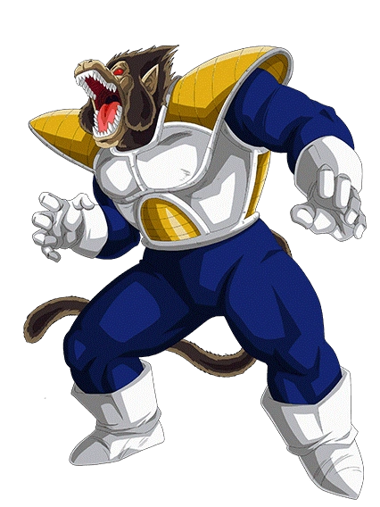

Life of Vegeta
The Prince of all Sayains, better than Goku. Vegeta is the Prince of an extraterrestrial race of warriors known as the Saiyans just like the series' protagonist, Goku. He believes he should be regarded as the strongest fighter in the Universe and becomes obsessed with surpassing Goku after fighting him. After his loss to Goku and the Z fighters, Vegeta later reluctantly unites with the heroes to thwart greater threats to the universe. Throughout the series, Vegeta's role changes from villain to antihero and later as one of the heroes, while remaining a rival to Goku.The Prince of all Sayains, better than Goku.Vegeta is the Prince of an extraterrestrial race of warriors known as the Saiyans just like the series' protagonist, Goku. believes he should be regarded as the strongest fighter in the Universe and becomes obsessed with surpassing Goku after fighting him. After his loss to Goku and the Z fighters, Vegeta later reluctantly unites with the heroes to thwart greater threats to the universe. Throughout the series, Vegeta's role changes from villain to antihero and later as one of the heroes, while remaining a rival to Goku.
Training with Vegeta
The average human power level is between 5 and 10
- Vegeta's power level
- vs Earth
- vs Frieza
- vs Cell
- vs Buu
- vs Baby
- vs Hit
Vegeta continues his vigorous training at Bulma's house, coming much closer to Gohan's
Super
Saiyan 2 power due to Gohan focusing on his studies.
 Vegeta gives Gohan a cold look and tells him that he should've
continued training, in his opinion, "living in times of peace is no excuse to be lazy".
Seven years after the Cell Games, despite lacking a worthy opponent, and having abandoned his
role as a
Vegeta gives Gohan a cold look and tells him that he should've
continued training, in his opinion, "living in times of peace is no excuse to be lazy".
Seven years after the Cell Games, despite lacking a worthy opponent, and having abandoned his
role as a

ITS
OVER
9000!!!!!
Vegeta and his family
Vegeta and Bulma initially met on planet Namek, but neither actually talked to the other; Bulma was too frightened, and Vegeta did not care, especially when his main concern was to find the Dragon Balls. However, their first interaction with each other was prior to his rematch with Zarbon, to which Vegeta threatened to kill both Bulma and Krillin. The first time any affection is displayed between them is in "Immortality Denied", in which Vegeta, during a conversation with Gohan, refers to Bulma as a "Gorgeous Girl" in the Ocean Group dubs.